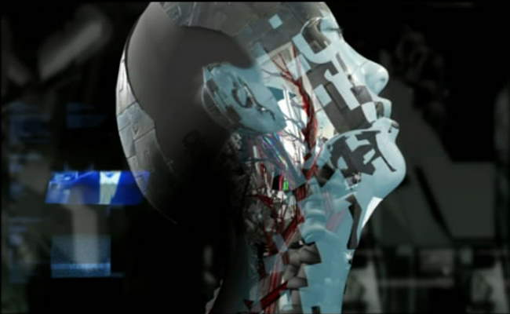
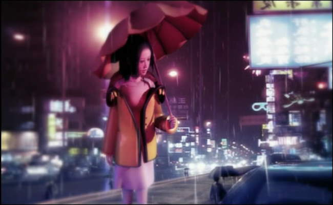
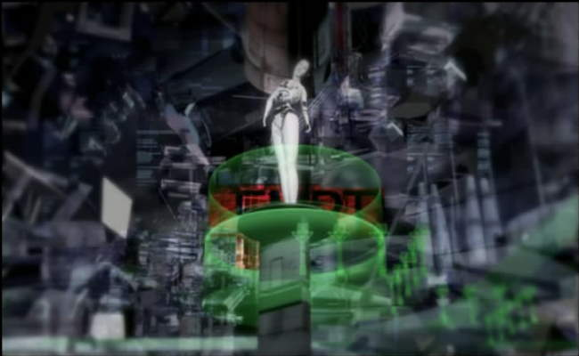
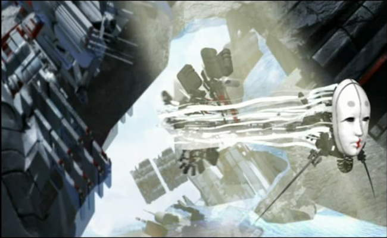
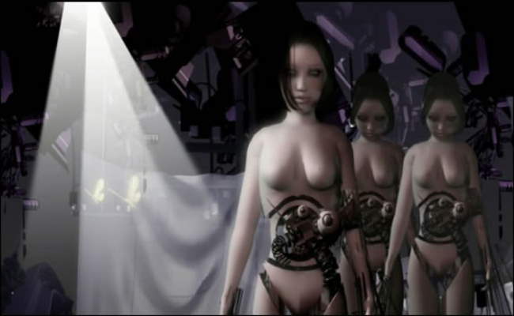
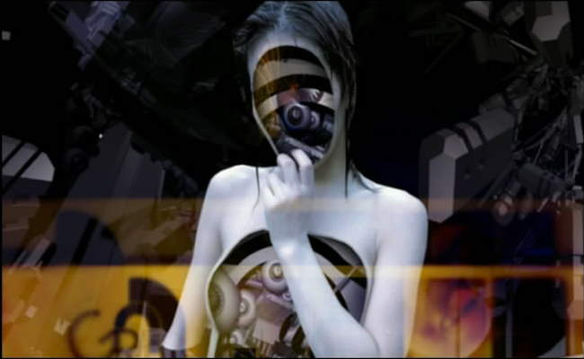
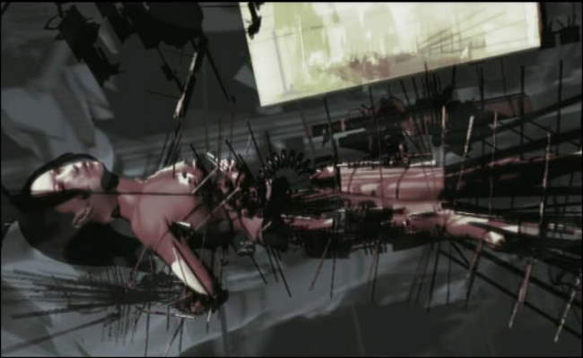
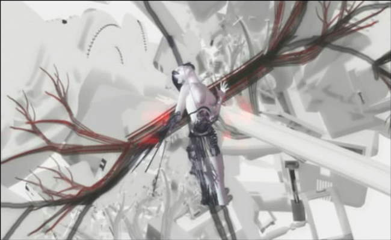
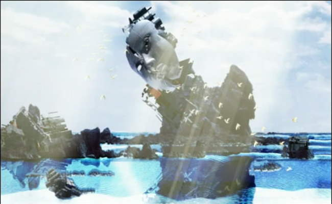
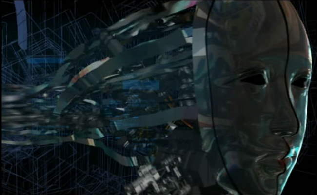

Movie review by : SFAM
Year : 2005
Directed by : Ben Steele
Written by : Darren Dugan, John Pinckney, & Ben Steele
Degree of Cyberpunk visuals : Very High
Correlation to Cyberpunk themes : Very High
Rating : 9/10
Key cast members :

Fragile Machine - a Cyberpunk Operetta: If there was ever such a thing as a cyberpunk operetta, Fragile Machine is it. Fragile Machine is an indie anime film short created by a very small organization of talented artists called Aoineko. Fragile Machine's narrative is largely told through haunting Chinese and English vocals set to a rhythmic, keyboard-laden techno beat (you can hear the main track by clicking on the aoineko link above). The combination of mind-expanding surreal android images with Aoineko's music provides an intensely immersive experience ? one which slowly envelopes your senses until you are a participant on Leda Nea's journey. Fragile Machine is divided into six distinct chapters, and is narrated by a small android girl named Goho.

The Story: Leda Nea, a lead scientist heading up android firm, Göln Remedios' Project Zero, is distraught over the death of her daughter, Mary. She no longer is interested in living, and decides to sign away her rights to be become a test subject for Project Zero. Leda Nea agrees to have her consciousness inserted into an android body, but the experiment goes horribly wrong, and Nea's consciousness is permanently trapped in the android. A year goes by and Leda Nea becomes Göln Remedios' primary work. Leda Nea has lost all sense of her former life, but still realizes she is trapped in a antiseptic prison ? one which she desperately wants to escape.

Eventually Leda Nea finds a way to trick her captors by using some of the android shells as decoys. Allthough still pursued by Göln Remedios' droids, she escapes to the woods, and, surrounded by nature, begins to remember her humanity. In doing so, Leda Nea remembers that she hates herself and her very existence, and finally begins to remember the daughter she has lost. She continues to be pursued by Göln Remedios' drones, but instead of getting captured she throws herself into a lake, and thus destroys her android body. At this point, her soul frees itself from its android host and embarks on an entirely new journey ? one which could potentially provide Leda Nea salvation by connecting her back with that which she lost. While the ending chapter is visually astounding, I can't go further without giving away the rest of the story.
A Post-modern Narrative: One one level, Fragile Machine appears to be a straightforward narrative in that it is explicitly divided into six chapters. Yet in watching this film, it becomes clear that the narrative is anything but straightforward. To understand the story, the viewer must pay close attention to the symbols, lyrics Goho's commentaries, and the various visual indicators sprinkled throughout the film. While lasting just over 30 minutes, those interested in understanding the message will definitely benefit from giving Fragile Machine multiple viewings. The third time through, I found myself freezing the screen on a number of images in order to understand their significance. The story summary above is the result of watching Fragile Machine a number of times prior to piecing this all together. For instance, only very late in the film do you find out that Leda Nea is project manager of Project Zero, and is thus, responsible for her own destruction.

The Visuals: Even if you don't care to spend time understanding the rich story and symbolism, Fragile Machine's android visuals alone are well worth the cost of the DVD. Fragile Machine comes at man-machine integration and android creation and destruction from such a myriad of directions that it leaves the viewer in a state of wonderment. Through the film, color palettes are linked with the various symbols portrayed in Fragile Machine. Visual Homages are paid to a myriad of sources including Blade Runner, Metropolis, Ghost in the Shell and Planet of the Apes.

Animation Issues: While the artwork in Fragile Machine is intensely creative, the CG movement is definitely subpar when compared to some of the larger budget works. When Leda Nea is running, or the puppet narrator, Goho, is talking, the quality of the animation negatively affects the immersion. Depending on how you come to see Fragile Machine, this might be enough to turn you away from this incredible picture (perhaps this accounts for the insanely low score on IMDB). However, I would argue that the animation is only a minor knock in an otherwise perfect film short. In looking at the immensely small crew involved in making Fragile Machine, they pretty much nailed all aspects of this film that didn't require massive CG animation engines. The post-modern story, the artwork and the music are all par excellence.

Interpreting Fragile Machine: Fragile Machine is visually and symbolically rich enough that the viewer can extract a number of fascinating thoughts. However, the larger point that Fragile Machine traces is a common cyberpunk theme - the idea that humans, in its pursuit of technology believes they will become omnipotent, with power over life and death itself. Yet in pursuing this course, we end up losing that which defines us ? our humanity. Eventually, this pursuit of the taboo ends up destroying our very society. In a wonderful review of Fragile Machine, Jens points out that the corporation developing the androids, Göln Remedios, is visually similar to the Tower of Babel ? both are stretching to the heavens in order to become God's equal.

When we find out that Leda Nea is in fact the Lead for Project Zero, the emphathy shifts from a rather simplistic view Göln Remedios' evil CEO figure being responsible to a far richer view. Leda Nea, in losing her daughter has lost her humanity, and thus no longer feels compelled to remain "human." Her decent into subverting humanity starts well before she is captured in an android body. It begins with her work to build project zero ? a project which at it core attempts to extract humanity and incarcerate it within a machine host. One almost wonders if Leda Nea initiated Project Zero in response to her daughter's death. While the evil CEO is clearly interested in using Leda Nea as a tool in attaining virtual Godhood, it is Leda Nea who chooses to become the virtual fallen angel (as depicted by her red hue much of the time during her android descent). But ultimately, Fragile Machine becomes a story of redemption, as Leda Nea's lost daughter, as represented by the elephant doll, becomes her guide towards finding ultimate salvation.

If an Android had a soul, what would happen to it when it dies? One of the more interesting questions Fragile Machine raises is the idea that if an android had a soul, what would happen when it dies? In pursuing this thought, Fragile Machine operates in the same territory as Ghost in the Shell, in which a human soul is essentially trapped within an android body. But the thought it raises can easily be taken farther than this: as we move ever closer towards sentient machines, what exactly becomes the difference between machines and humans? If machines become sentient, could they not also develop a soul? And if so, can this soul exist in some fashion even after its host has died?

What Does a Human Mask Represent? Similar to f8, Fragile Machine uses a mask of a human-looking face to represent the attainment of humanity. Only in this case, the mask represents humanity's technology enabled drive to create post-humanity ? androids in our own image. Interestingly, this interpretation masks when viewing the last chapter of Fragile Machine leads to an interesting conclusion about the pursuit of post-humans. One wonders whether it is possible to pursue sentient androids in a way that does not explicitly challenge God's (or nature's) sacred role over life and death. Fragile Machine almost seems to be advocating an evolutionary, emergent approach over an overt, dominating, dehumanizing approach.

The Bottom Line: Rarely do we encounter a film so creative in its development, where the sounds and visuals are inexorably linked in expressing such an interesting story. While the animation isn't on par with larger scale productions, the songs and visuals more than make up for it. In totality, Fragile Machine conveys a complex, multi-layered story that is rich in symbols and ideas. This is truly a piece of cyberpunk art not to be missed. Give it a try if you're looking for something different.